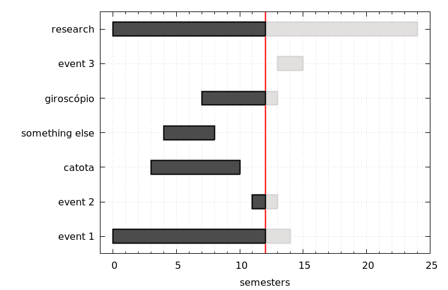
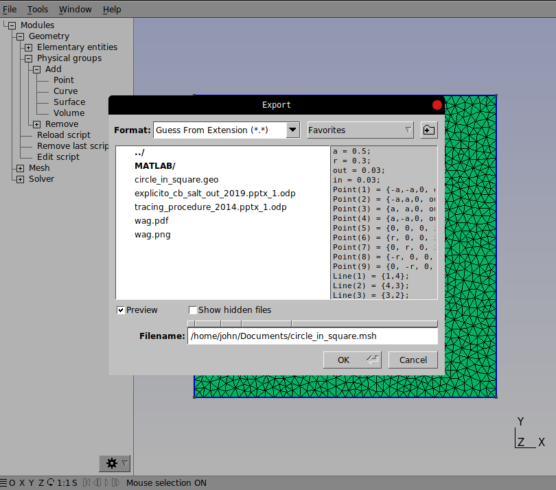
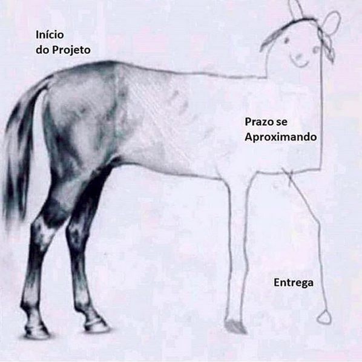

Ativando o recurso do WSL no Windows
Este post é direcionado principalmente aos membros do grupo de pesquisa $\ \mu\Phi$Flow (escoamento multifísico e multifásico) da UFAL, sobre a ativação do WSL2.
O WSL é uma alternativa para que os desenvolvedores pudessem aproveitar o Windows e o Linux ao mesmo tempo em um computador Windows. O WSL (Subsistema do Windows para Linux) permite que os desenvolvedores instalem uma distribuição do Linux (como Ubuntu, OpenSUSE, Kali, Debian, Arch Linux etc) e utilizem aplicativos, utilitários e ferramentas em linha de comando bash do Linux "dentro" do Windows, sem nenhuma modificação (sem ter que utilizar o GRUB - GRand Unified Bootloader "Carregador de inicialização unificado" ou uma maquina virtual).
Para que seja possível utilizar o WSL, é importante checar alguns pré-requisitos. Você deve estar com a versão do Windows 10 versão 2004 e superior (Build 19041 e superior) ou o Windows 11 para ter WSL em sua máquina. Com este pré-requisito satisfeito, vamos para o procedimento de ativação e instalação do recurso WSL.
Passo 1: Ativando o recurso do WSL
-
Na barra de pesquisa do Windows, pesquisar por: "ativar recursos do windows"

-
Procurar e ativar as opções:
Após a ativação será necessário reiniciar o computador para que as alterações sejam contempladas.
Passo 2: Instalando a distribuição Linux
-
Depois da inicialização do Windows. Abrir o PowerShell ou o Prompt de Comando do Windows no modo administrador clicando com o botão direito do mouse e selecionando "Executar como administrador". Em seguida, baixar e instalar a distribuição Ubuntu no wsl (mais informações ver Configurar um ambiente de desenvolvimento WSL | Microsoft Learn ou Instalar o WSL | Microsoft Learn), basta executar o comando:
shell wsl --install -d ubuntu
Após a finalização do procedimento, teremos o Ubuntu no nosso sistema operacional Windows.
-
Abriremos o Ubuntu para configuração e utilização. Para isso, pesquisamos por “Ubuntu”
Importante: As vezes será necessário atualizar o kernel do wsl instalado, para isso devemos instalar a atualização do mesmo, seguindo o link: Etapas de instalação manual para versões mais antigas do WSL | Microsoft Learn (procurar na Etapa 4 ou 5…). Após a atualização, abrir novamente o Ubuntu
-
Com tudo rodando certo, devemos criar o usuário do sistema Ubuntu, e criar uma senha. Possívelmente encontrarás uma menságem similar a:
Aqui definimos um usuário chamado de “catota” e a senha: “123456”
Com isso estamos com o sistema Ubuntu ativo e funcionando
-
Recomendamos fortemente que você crie duas pastas na sua
homede usuário chamadas “opt” e “run”, a primeira para colocar programas de instalação e a segunda para inserir todos os arquivos de casos que serão rodados. Para isso, basta rodar os comandos:
Entendendo o sistema de arquivos do WSL e do Windows
Não recomendamos trabalhar em sistemas operacionais que utilizam os mesmos arquivos/caminhos, a menos que você tenha um motivo específico para fazer isso. Para uma melhor velocidade de desempenho, armazene os seus arquivos no sistema de arquivos do WSL (sistema linux) se você estiver trabalhando em uma linha de comando do Ubuntu (Janela preta). Se estiver trabalhando em uma linha de comando do Windows (PowerShell, Prompt de Comando), armazene os arquivos no sistema de arquivos do Windows.
Por exemplo, para armazenar arquivos de projeto computacionais nativos/rodados no WSL, use o diretório raiz do sistema de arquivos do Linux: \\wsl$\Ubuntu\home\<user name>\project, e não o diretório raiz do sistema de arquivos do Windows: /mnt/c/Users/<user name>/Project ou C:\Users\<user name>\project
Quando você ver /mnt/ no caminho de arquivo de uma linha de comando do WSL (tela preta do sistema linux), isso significa que você está trabalhando em uma unidade montada. Portanto, a unidade C:/ (C:\Users\<user name>\project) do sistema de arquivos do Windows, terá a seguinte aparência (quando montada em uma linha de comando do WSL): /mnt/c/Users/<user name>/project. É possível armazenar seus arquivos de projeto em uma unidade montada, mas a velocidade do desempenho melhorará se você os armazenar diretamente na unidade \\wsl$.
Quando dentro do sistema WSL (tela preta do Ubuntu), podemos ver o diretório em que os arquivos estão armazenados abrindo o Explorador de Arquivos Windows através da linha de comando, usando:
explorer.exe .
Obs.: É necessário ter o “.”, isso indica que queremos abrir o diretório corrente. Portanto, não se esqueça de adicionar o ponto no final do comando para abrir o diretório atual.
Para ver se os arquivos do sistema WSL (arquivos dentro do Ubuntu) estão disponíveis, basta no Explorador de Arquivos do Windows, inserir \\wsl$\Ubuntu\home\catota na barra de endereço (se o usuário que colocaste é "catota").

Se tudo estiver ocorrido bem, deveremos visualizar algo semelhante a isto:
Bom isto é tudo! Espero que tenha ocorrido tudo conforme mostrado.
Creating gantt plot using gnuplot
At the beginning of the year, it is the period for writing the proposal (or for the master's thesis or doctoral dissertation), iin some programs, as like the UFPE chemical engineering post-graduate, there is a requirement to prepare a schedule of activities proposed to carry out the work. For this reason, I am writing this post, to help to generate something like a Gantt chart showing when a task has started and ended.
Gnuplot is a very versatile tool when we want to work with graphics generation. Doing a quick survey of how to generate a Gantt chart using Gnuplot, we find some examples or in Python and Latex.
Using some Gnuplot internal functions, we wrote this script that produces a simple Gantt chart (a schedule of activities):

Feel free to use my script and modify it in any way you like!
Gmsh: exporting old msh format
This post is mainly aimed at my colleagues (and students) in the LMCG research group at LITPEG. After many people going to me, asking about a bug of p3matpac preprocessor, I decide to write it.
After the Gmsh 4.0.0 release, Christophe Geuzaine and Jean-François Remacle set the new msh version (msh4) as default msh format (I guess... ). After that, new students and colleagues have faced with a following error:
>>> g = gridprocessing.load_gmsh('mesh_test.msh') Unknown mesh format: 4.1 0 8
There are 3 ways to fix this: GUI, CLI, and script 1.
GUI mode
You need to have the following steps:
1) Press Ctrl+E shortcut to open the export window:

2) Select the Version 2 ASCII and OK.

Done!!
CLI mode
Using the command line interface all you need is run this:
gmsh mesh_test.geo -2 -format msh2
Script
Just put this Mesh.MshFileVersion = 2.2; into *.geo script file.
Other way
Using this mode, gmsh will always save in msh format 2.2. All you need is add this lines:
Mesh.Format = 1; // msh output format Mesh.MshFileVersion = 2.2; // Version of the MSH file format to use
Into .gmshrc file, by this command:
echo "Mesh.Format = 1; // msh output format Mesh.MshFileVersion = 2.2; // Version of the MSH file format to use" >> ~/.gmshrc
-
Some steps ilustrated here can also be found on Gmsh: MSH file format ↩
Procrastination cycle
O ciclo da procrastinação.
Após uma reunião com o seu chefe (ou orientador), o mesmo lhe dá um prazo de 1 mês para entregar aquele projeto. No primeiro momento você diz:
- Puxa, 1 mês é bastante tempo, vou dar conta fácil!
Aí você começa o projeto de maneira bem caprichosa. No meio do caminho, você dá uma pausa para ver as notícias do dia, ver aquele programa que você perdeu ontem... e quando se dá conta, já perdeu mais de 2 horas.
Nesse meio tempo, um alerta no celular. O grupo de amigos tá super agitado e a galera tá combinando umas saidinhas no final da semana e no fim de semana... Ou no grupo da família surge alguma “zoeira” ou algo semelhante... Quando você senta para retornar ao trabalho...
É quando... Aí você levanta, para toma uma água ou aquele cafezinho e encontra outras pessoas para ficar conversando... Depois disso você para e pensa: agora vai!!... Vai pra onde meu filho!? Vai usar o banheiro e assim sucessivamente...
Quando se dá conta já perdeu o dia inteiro, a semana inteira e quando chega o dia da entrega do tão esperado projeto... O resultado? Olha aí na imagem abaixo!

Tinha tudo para ser o melhor projeto mas, o ciclo da procrastinação não deixou.
Você já parou para analisar seu dia a dia no trabalho? Você faz suas tarefas agora ou sempre deixa para depois?
Às vezes, mesmo sem saber, você está praticando o tão vicioso ciclo da procrastinação... Isso pode explicar a baixa produtividade de bons profissionais!
Nonlinear dynamics 1: Phase portrait
Sometimes chemical problems can be answered using knowledge of nonlinear dynamic analysis that is not directly related to chemistry. For example, some information about a complex reactions flow can be gained from the mathematical models of the interspecific competition. Oscillating chemical reactions such as the Bray-Liebhafsky reaction, the Briggs-Rauscher reaction , and the Belousov-Zhabotinski reaction provide wonderful examples of relaxation oscillations (nonlinear behavior) in science. They are often demonstrated in chemistry classes or used to astound the public at university open days. The first experiment of the BZ reaction was conducted by the Russian biochemist Boris Belousov in the 1950s, and the results were not confirmed until as late as 1968 by Zhabotinski (those examples will be addressed ina future post).
In this first post, we going to make a classic phase portrait analysis, considering non-isothermal CSTR problem, where we going to identify multiplicity steady-state. Due to the nonlinear behavior of chemical systems (strongly linked with the Arrhenius equation), the existence of multiplicity steady-state is often found when we are modelling or simulating a chemical system, sometimes we come across this behavior, experimentally.
Before we get started, let's define critical points (steady-state for engineering chemical accent) and how to classify them. First start with one of the simplest systems, a homogeneous linear system. Such a system has the form:
where \(\mathbf{A}\) is a matrix 2-by-2, and \(\mathbf{x}\) is a vector 2-by-1. From calculus we have solution family like \(\mathbf{x} = \mathbf{\omega} e^{\lambda t}\). So replace this into homogeneous system, we get:
with \(\lambda\) and \(\omega\) are the eigenvalue and eigenvector of \(\mathbf{A}\), respectively. In order to obtain the eigenvalue, we need to solve the characteristic equation (\(\mathrm{det}\left(\mathbf{A} - \lambda\mathbf{I} \right) = 0\)) and eigenvector from constraint \(\|\omega\| = 0\) and homogeneous system above.
The correspondent solution of the homogeneous linear system (i.e. when \(\mathbf{A}\mathbf{x}=0\)) is named by critical points and correspond to steady-states or equilibria of the system. The investigation of the critical point character, based on Lyapunov’s stability criteria, is closely related to the question of the system stability at the steady-state to small disturbances can be assessed first by linearization and then by computation of the eigenvalues of the Jacobian matrix:
Or qualitatively using phase portrait analysis. The phase portrait is a set of solving from a number of initial conditions, that will produce a phase path (a plot that shows the dependence of one unknown with the other) showing the behavior of the system along time integration. For example, given the linear system:
which has as critical point in the origin, and the eigenvalues of Jacobian: \(\mathbf{J} = \begin{bmatrix} a & 0 \\ b & b\end{bmatrix}\) are a and b. If \(a= -1; b=-5\) the phase portrait [1] looks like this:
Phase portrait with a= -1 and b=-5.
Here all trajectories are lines through the origin (steady state of the system), this behavior is typically to attractor critical points. Others trajectories are ilustraited in Table below, with differents values for a and b:
Parameters values |
Phase portrait |
Critical point type |
|---|---|---|
a = +1; b = -5 |
saddle point |
|
a = +1; b = +5 |
source point |
Those are commonly found in chemical reactors system, but there are others critical points types (center, spiral, star, degenerated,... more info, see the aforementioned references).
Here the chemical engineering kinetic borrows some terms from the dynamic system theory, without a deep discussion of the mathematical apparatus, we will show how the mathematical suites allow one to determine the critical point type. Assume the mathematical model of a process described by a set of two differential equations. As we saw above, in order to find the critical point type one has to: 1. Calculate the critical points (steady-states) on a phase plane, or solving the corresponding algebraic equation set (\(\mathbf{A}\mathbf{x}=0\)); 2. Compute the Jacobian matrix for the system using the critical points coordinates (\(\mathbf{J}(\mathbf{x0})\)); 3. Find the eigenvalues of the latter matrix, to establish the critical point type and the stability of the stationary state.
Non-isothermal reactor problem
Lets us consider the steady-state operation of a CSTR under non-isothermal conditions. If an exothermic reaction takes place in an isolated system (i.e. adiabatic reactor, absent of the heat exchange), a temperature will apparently increase over time, for example, hydrolysis of Propylene Glycol. The rate of this increase depends both on the kinetic parameters (rate constant) and on the thermodynamic properties of the system (thermal conditions of the reaction, heat capacity). For a well-mixed tank reactor, where a single first-order reaction: A + B → C occurs, the mathematical model is described by this set of equations:
where: \(\tau\) residence time, \(C_{Ao}\) the input reagent concentration, \(r_A = k_o e^{\frac{E}{RT}} C_A^n\) kinetic rate, \(T_o\) is the reagent temperature at entering reactor, \(\Delta H_{rx}\) heat of reaction, \(\rho|_{mx}\) misture density and \(C_p|_{mx}\) misture heat capacity. For simplicity, we assume that the heat capacity, heat reaction and density are temperature independent (i.e. constants) and the kinetic is a single first-order reaction. So, we can rewrite the model as:
with: \(G = \frac{\Delta H_{rx}}{\rho C_p |_{mx}}\).
Modeling the system of ODEs using the initial parameters:
\(G\) |
\(90.3\) |
\(\frac{E}{R}\) |
\(- 6307\) |
\(k_o\) |
17 x \(10^{+6}\) |
\(\tau\) |
60 |
\(C_{Ao}\) |
1.5 |
\(T_o\) |
250 |
We can find a stationary state through the phase portrait, from several initial conditions as ilustraited following:
We can see that the steady-state (1.499, 250.015) is an attractor critical point, because all phase path toward it. The stationary state is linked to the thermal stability of the reactor (in the current case) and consequently with the convertion, that in this case is very slow. In order to confirm the attraction behavior, we analyze the Jacobian of the system using the critical point:
where we found the following eigenvalues: (-0.1667, -0.1666) < 0. The dynamic of this problem depends on the temperature of the initial mixture (as also: inlet concentration, residence time and etc), and thusas also the portrait can change strikingly. In the discussed example the steady-state is undesirable from the efficiency point of view. In order to enable the process, we need to increase the inlet temperature to improve the convertion and thus goes from old stationary to the other one, stable or may be unstable. If the latter one happens, any small perturbation of the system takes it out of the unstable state and goes to a stable one. Such situation is illustrated the animation below
When we change the input reagent temperature, we saw the presence of multiple steady-state (red square). In these cases (@ 322 and 331), the animation shows that two of the three possible stationary states are stable: for them the Jacobian matrix eigenvalues are real and of the same sign (stable point). The third steady-state has Jacobian eigenvalues real, but with signs opposite (saddle point).
\(T_o\) |
\(C_A, T\) |
eigenvalues of Jacobian \((C_A,T)\) |
|
|---|---|---|---|
@ 322.727 |
1.431, 328.90 |
-0.1670, -0.1140 |
Attractor |
0.736, 391.70 |
-0.1670, 0.0132 |
Saddle |
|
0.225, 437.80 |
-0.0478, -0.0167 |
Attractor |
|
@ 331.818 |
1.313, 348.70 |
-0.0167, -0.0044 |
Attractor |
1.110, 367.00 |
-0.0167, 0.0049 |
Saddle |
|
0.142, 454.50 |
-0.1141, -0.0167 |
Attractor |
This example by no means covers all possible problems of chemical reactor kinetics as well as other differential models for chemical-engineering processes, on which the nonlinear dynamic can be applied. In the next post, we'll be shown how to make a bifurcation diagram through software MatCont.